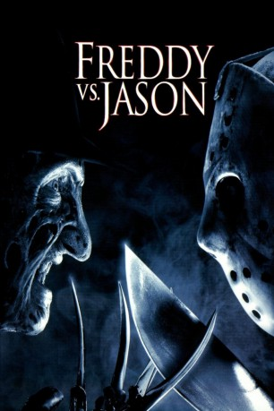
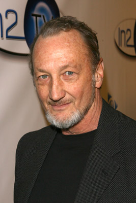
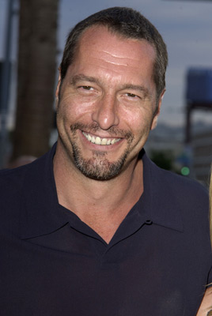

#4092 Freitag, der 13. - Teil 11 - Freddy vs. Jason
 
 IMDB-Wertung: 5.8 / 10
IMDB-Wertung: 5.8 / 10  Metascore: 0
Metascore: 0 
Fast zehn Jahre sind ins Land gezogen, seit Freddy Krueger (Robert Englund) auf seinem bis dato letzten Rachefeldzug war. Jetzt schmort er in der Hölle. In Springwood hat man seinen Amoklauf systematisch verdrängt - niemand will sich an Freddy erinnern. Potenzielle Opfer werden unter Drogen gesetzt, damit sie nicht träumen, und schon ist der Meister des Albtraums machtlos. Heute hat keiner mehr Angst vor Freddy - was dem egomanischen Psychopathen wahrlich Höllenqualen bereitet, denn er hält sich selbst für eine Legende. Doch dann erweckt er jenen wahnsinnigen Jason Voorhees (Ken Kirzinger) zu neuem Leben, der genau wie er selbst als Killer Kultstatus genießt. Freddy benutzt Jason, um die Elm Street erneut in Angst und Schrecken zu versetzen und dem Fegefeuer zu entkommen...
Jahr: 2003
Dauer: 97 Minuten
FSK: 18
Land: USA Studio: New Line CinemaTonspuren:
Untertitel: Deutsch, Englisch, , ,
Auflösung: 1080p (1920x816) Größe: 10158 MB
Genre: Action, Horror, Thriller
Regisseur:  Ronny Yu
Ronny Yu
Drehbuch: Ron Kurz
Soundtrack:
Darsteller:
-  Robert Englund als Freddy Krueger
-  Ken Kirzinger als Jason Voorhees
- Monica Keena als Lori Campbell
- Jason Ritter als Will Rollins
- Kelly Rowland als Kia Waterson
 Chris Marquette als Charlie Linderman
Chris Marquette als Charlie Linderman- Brendan Fletcher als Mark Davis
- Katharine Isabelle als Gibb
 Lochlyn Munro als Deputy Scott Stubbs
Lochlyn Munro als Deputy Scott Stubbs- Kyle Labine als Bill Freeburg
 Tom Butler als Dr. Campbell
Tom Butler als Dr. Campbell- Paula Shaw als Mrs. Pamela Voorhees, Jason's Mother
 Jesse Hutch als Trey
Jesse Hutch als Trey Zack Ward als Bobby Davis, Mark's Brother
Zack Ward als Bobby Davis, Mark's Brother Garry Chalk als Sheriff Williams
Garry Chalk als Sheriff Williams Alistair Abell als Officer Goodman
Alistair Abell als Officer Goodman- Robert Shaye als Principal Shaye
 Chris Gauthier als Shack
Chris Gauthier als Shack- Colby Johannson als Teammate
- Kimberley Warnat als Beer Line Girl
- Alex Green als Frisell, Glowing Raver
- Odessa Munroe als Heather
- Blake Mawson als Dead Boy on Tree
- Viv Leacock als Kinsey Park, Male Nurse
- Eileen Pedde als School Nurse
 Evangeline Lilly als School Student - Next to Locker , uncredited
Evangeline Lilly als School Student - Next to Locker , uncredited- Rey Mysterio als Jumper , uncredited
- David Kopp als Blake
- Brent Chapman als Blake's Father
- Spencer Stump als Young Jason Voorhees
- Joëlle Antonissen als Little Girl
- Kevin Hansen als Beer Line Guy
- Jamie Mayo als Dead Girl on Tree
- Tony Willett als Asylum Guard
- Claire Riley als TV Reporter
- Sharon Peters als Lori's Mother
- Sarah-Anne Hepher als Skipping Girl
- Kirsti Forbes als Skipping Girl
- Taryn McCulloch als Skipping Girl
- Sean Tyler Foley als Male Counselor
- Jacqueline Stewart als Female Counselor
- Laura Boddington als Female Counselor
- Colton Shock als Cruel Child
- Spencer Doduk als Cruel Child
- Anysha Berthot als Cruel Child
Datei: X:\FSK18-Collections\Freitag, der 13\Freitag, der 13. - Teil 11 - Freddy vs. Jason (2003, FSK18, 1920x816).mkv seit 19.07.2016
Festplatte: FSK18
 Es gibt insgesamt 15 Filme in der Gruppe 'FSK18-Collections\Freitag, der 13'
Es gibt insgesamt 15 Filme in der Gruppe 'FSK18-Collections\Freitag, der 13'